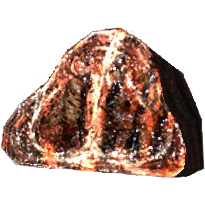

<h1>Mammoth Steak</h1>

<a href="../index.html">Return</a>



<h2>Description</h2>

<p> Restores 10 points of Health. </p>

<h2>Ingredients</h2>
    <ul>
        <li>Salt Pile</li>
        <li>Mammoth Snout</li>
    </ul>

<h2>Steps</h2>

<ol>
    <li>Season the steak generously on both sides with salt</li>
    <li>Heat a heavy pan on the fire</li>
    <li>Set the steak in the pan and flip it when the bottom is brown</li>
</ol>


